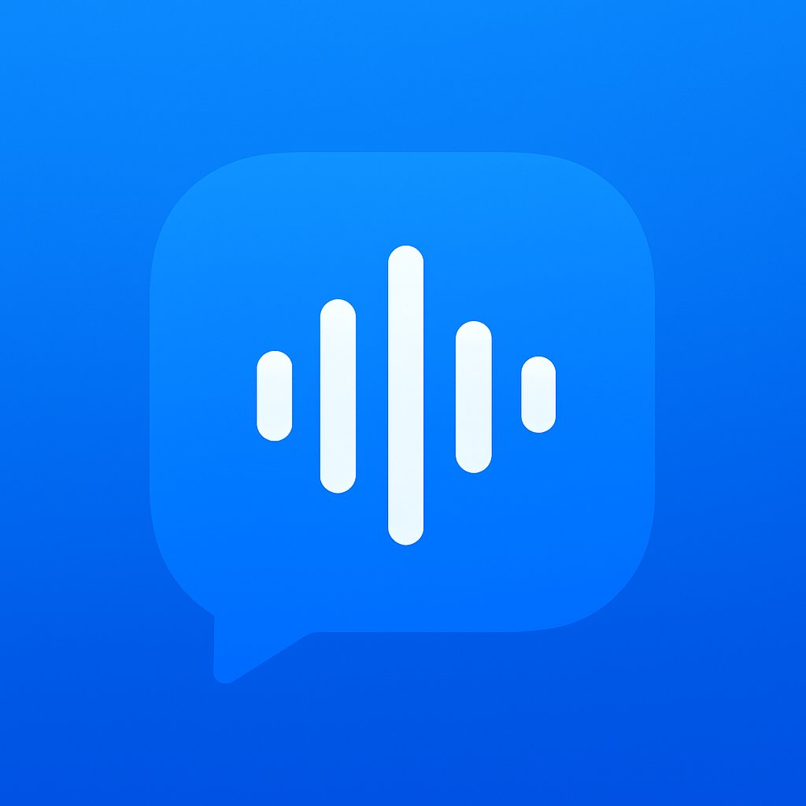
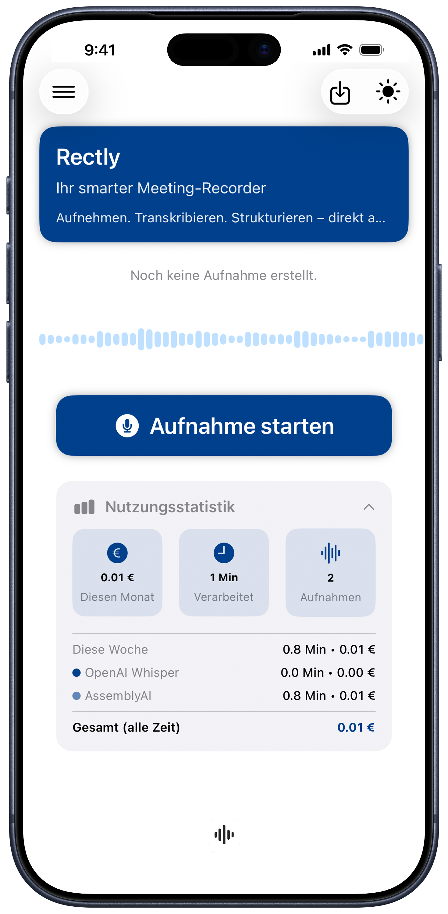
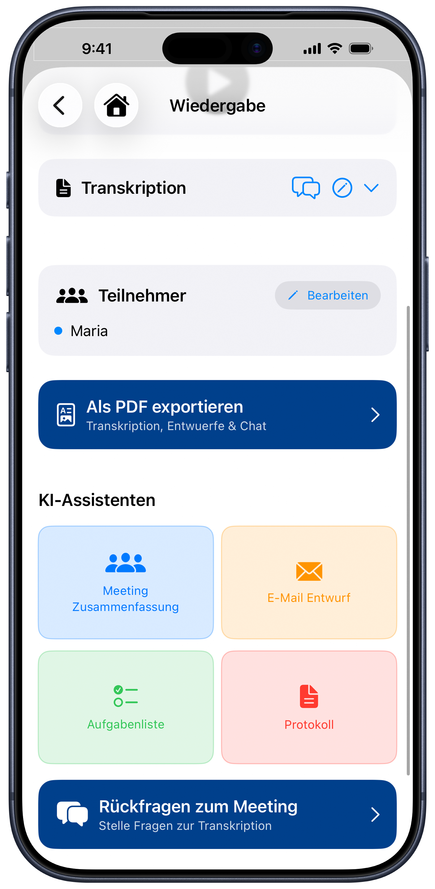
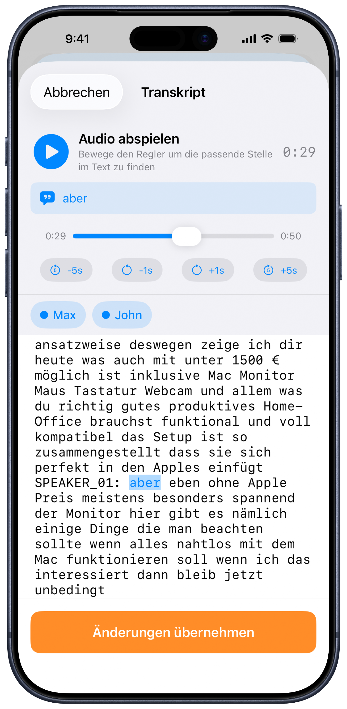

Rectly
Deine intelligente Meeting-Aufnahme-App mit KI-gestützter Transkription und Sprechererkennung.




Deine intelligente Meeting-Aufnahme-App mit KI-gestützter Transkription und Sprechererkennung.



Deine API-Schlüssel werden verschlüsselt im iOS Keychain gespeichert und sind durch biometrische Authentifizierung (Face ID/Touch ID) geschützt. Sie verlassen niemals dein Gerät.
Alle Daten werden lokal auf deinem iPhone gespeichert. Nichts wird automatisch in die Cloud synchronisiert.
Lokaler Modus: Nein, alles bleibt auf deinem Gerät.
API-Modus: Die Audio-Datei wird temporär zu OpenAI hochgeladen.
Ja! Im lokalen Modus nutzt Rectly Apple Speech Recognition – kostenlos, offline und ohne API-Schlüssel. Den Modus wählst du in den Einstellungen.
OpenAI Whisper: ~0,6 Cent pro Minute
Die Kosten werden im Dashboard auf der Startseite angezeigt.
Lokal: Alle von Apple Speech Recognition unterstützten Sprachen.
API: Über 50 Sprachen (OpenAI Whisper).
API-Modus: OpenAI erkennt Sprecher automatisch. Du weist ihnen danach Namen zu.
Lokaler Modus: Sprecher können manuell markiert und benannt werden.
Ja, nach der Transkription und auch jederzeit später in den Aufnahmedetails.
Automatische Zusammenfassungen, KI-Chat zu Aufnahmen, KI-Assistenten mit Prompt-Templates und mehrere Entwürfe pro Aufnahme.
KI-Features sind nur im API-Modus verfügbar. Wechsle in den Einstellungen zum API-Modus, um sie zu aktivieren.
Ja, als professionell formatierte A4-PDFs mit Transkript, Sprecherinformationen und optional KI-Zusammenfassungen.
Ja, mit Texteditor, Audio-Synchronisation und der Möglichkeit, Sprecher-Tags einzufügen.
Rectly benötigt mindestens iOS 16.
Nein, Rectly verwendet ausschließlich Apple-Frameworks – keine externen Dependencies.